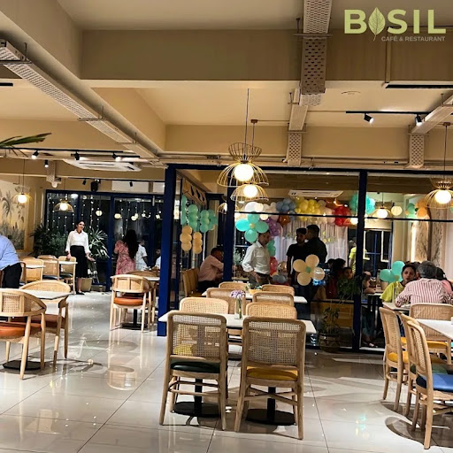
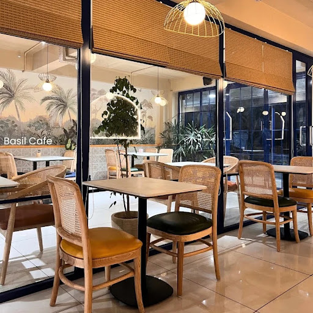
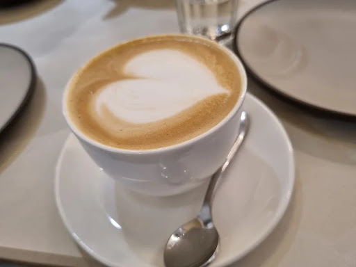
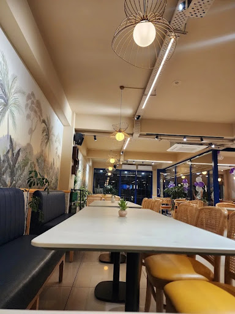
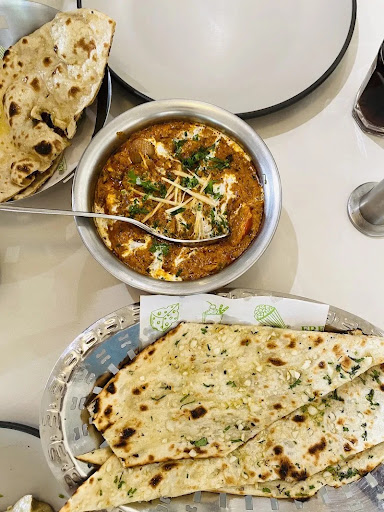
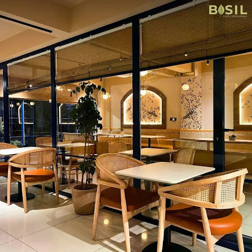

The Art of Slow Gathering
How an obsession with wild herbs, heritage grain, and quiet mornings formed the foundation of Basil Café.

A Seed Planted
in Stillness
Before Basil was a sanctuary of stone, wood, and fragrant botanicals, it was a quiet rebellion. In a culinary landscape accelerated by rapid takeaway counters and mechanized convenience, we felt the persistent ache for a slower ritual—a room where an espresso was not an urgent fuel, but a meditative pause.
In the late autumn of 2021, we secured a neglected mid-century greenhouse adjoining an artisan joinery. With daylight pouring through high clerestory windows, we envisioned a space governed not by turnover times, but by natural botanical rhythms: the slow proofing of sourdough overnight, the steady extraction of washed Geisha coffee, and the hand-trimming of fresh sweet basil at sunrise.
Every detail—from the weight of our unglazed pottery to the low-frequency hum of ambient jazz—was chosen to decelerate pulse rates and restore hospitality to its most fundamental impulse: sheltering the neighborhood soul.

“We believe the simplest ingredients, honored with patience, create indelible memories.”
Our Four Pillars of Purpose
Every beverage poured and loaf scored adheres to a deliberate framework of ecological ethics and sensory discipline.
Botanical Reverence
Infusing specialty drinks, syrups, and viennoiserie with tender botanicals clipped directly from our courtyard micro-garden moments before dawn.
Slow Fermentation
36-hour sourdoughs and wild heritage levains nurtured with unbleached organic flours. Breads with crisp caramelised crusts and deep lactic sweetness.
Conscious Sourcing
Single-estate, shade-grown micro-lots roasted gently on vintage cast drums. Paired with certified regenerative whole milk from local pasture herds.
Warm Hospitality
Care without stiffness. Table service conceived as though welcoming old companions into an unhurried family home with attentive warmth.
Quiet Tactility in Every Surface
Our atelier was designed as an acoustic and sensory haven. Lime-washed plaster walls soften urban acoustics, creating an ambient quietude rarely found in modern city dining.
Every table was handcrafted from salvaged 180-year-old European white oak joists. The olive-glazed earthenware was thrown exclusively for Basil by ceramist Clara Lindqvist in nearby Dalston, each cup celebrating slight geological variances in glaze and fire.
Chalk Lime Plaster • Salvaged Bavarian Oak • Travertine Countertops • Belgian Raw Linen


The Hands Behind the Craft
A kitchen driven by curious minds, trained hands, and an unwavering humility toward regional ingredients.

Elena Vaneva
Crafting flame-baked garlic coriander naans and slow-simmered aromatic curries with freshly picked herbs from our botanical pantry daily.

Julian Mercer
Julian spends three months annually on single-family fincas across Huila and Yirgacheffe, selecting beans that accentuate floral, herbal, and citrus attributes under lighter roasts.
A Note on Hospitality Without Pretension
While we are uncompromising about precision, we reject culinary elitism. Whether you arrive for an elaborate three-course brunch tasting or simply desire a cup of filter coffee and thirty uninterrupted minutes with your sketchbook, you will always be received with gentle kindness.
Taste Our Story in Every Cup & Crumb
Our doors open with first light. Come early for warm cardamom-basil buns or linger late into the golden afternoon with our seasonal botanical pairings.